Tools + Templates
AI-powered professional tools that encode cross-disciplinary expertise into practical workflow applications — cost estimators, document evaluators, and templates mapped to the OAC disciplines.
In Development
Owners · Architects · Contractors+Products
The articles explain the thinking. These products apply it. Everything below is in development — subscribe on Substack to hear when each one launches.
AI-powered professional tools that encode cross-disciplinary expertise into practical workflow applications — cost estimators, document evaluators, and templates mapped to the OAC disciplines.
In DevelopmentCurated digests of OAC articles organized by theme, with original framing essays that turn a collection into a coherent narrative.
In DevelopmentDeeper reframings of the OAC thesis — reference works for professionals who want the macro-level view across all three disciplines.
In DevelopmentStructured coursework built from three decades of practice and 18 years in the classroom — bridging academic theory with professional reality.
In DevelopmentSpeaking engagements and cross-disciplinary advisory for owners, architects, and contractors navigating the gaps between their roles.
In Development